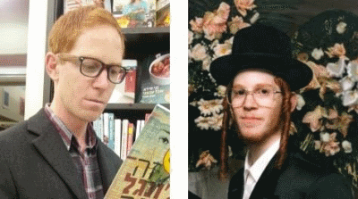

ארגון ובחרת הוקם על ידי מאיר נאור, יוצא בשאלה חסיד בעלזא לשעבר. הארגון מנסה לסייע לכלל החרדים לשעבר - גם לכאלו שבוחרים להישאר דתיים לייט או אפילו להישאר חרדים במסגרת יותר פתוחה. הארגון הקים מסגרת לשיתוף פעולה עסקי בין חרדים לשעבר שיוצר קשרים בין בעלי עסקים וגורמים מהעירייה.
הארגון גם משקיע יותר מהארגונים האחרים במשפחות חרדיות שמבקשות לצאת מהקהילה החרדית יחד, שזהו תהליך הרבה יותר מורכב מאדם יחיד שמנסה לצאת.
הארגון נקרא "ובחרת" בכדי להדגיש שהוא מקבל כל בחירה של החרדי שמנסה להיחלץ מהקהילה גם אם יבחר להישאר דתי מודרני וגם אם יבחר להפוך לחילוני. הארגון מסייע ל"בוחרים" להשתלב במגזר החילוני אך גם במגזר הדתי. הוא מחזיק מתנדבים, חלקם רבנים, דתיים לאומיים שנכונים לסייע.
דף הפייסבוק של ארגון ובחרת